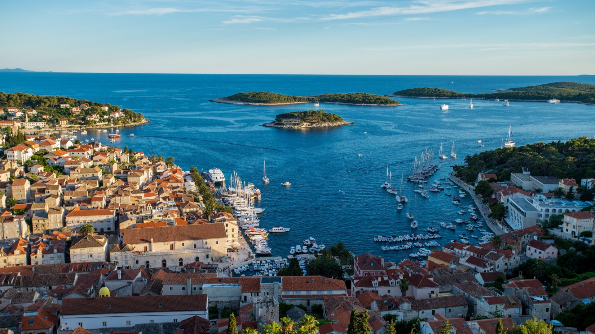

Istočna Obala Jadrana
Dalmacija
Otok Hvar
Grad Hvar

Ovo je prelijepi grad Hvar na istoimenom otoku!
Zalazak je sunca.
U gradu Hvaru postoje brojne:
- stare zgrade
- kulturno blago
- turistička zajednica
koji turistima pružaju puni doživljaj.
Predložena ruta obilaska obuhvaća redom:
- gradsku jezgru
- trgovine
- obližnje otočiće
Kliknite ovdje kako biste vidjeli kartu grada Hvara.